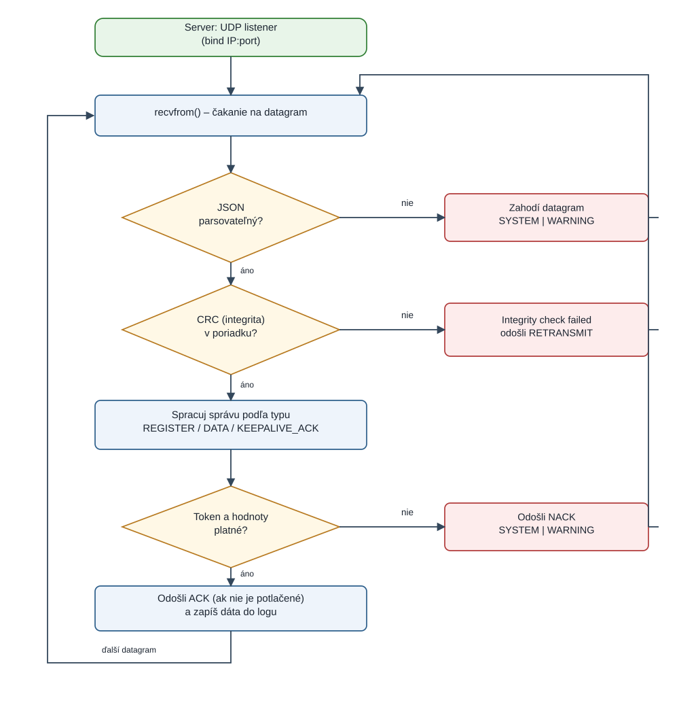
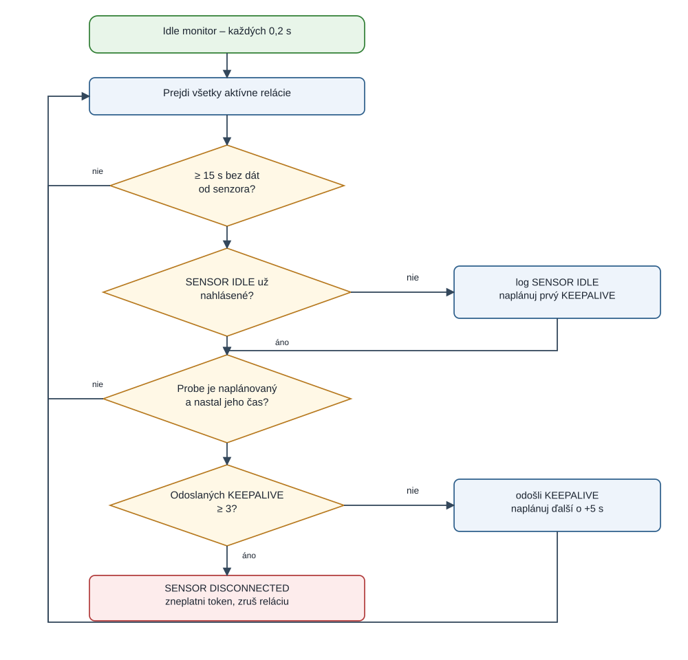
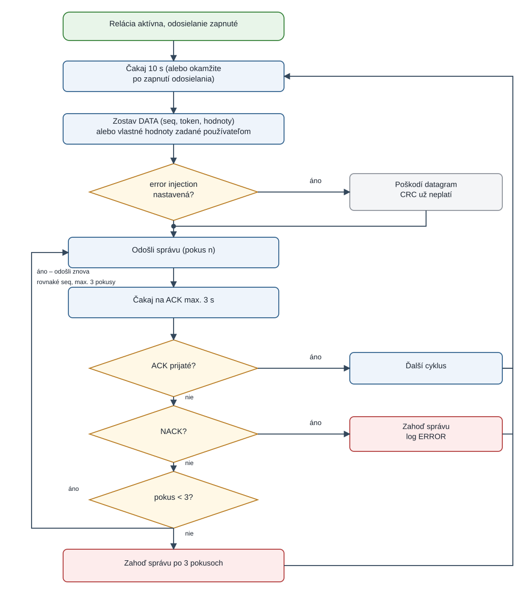
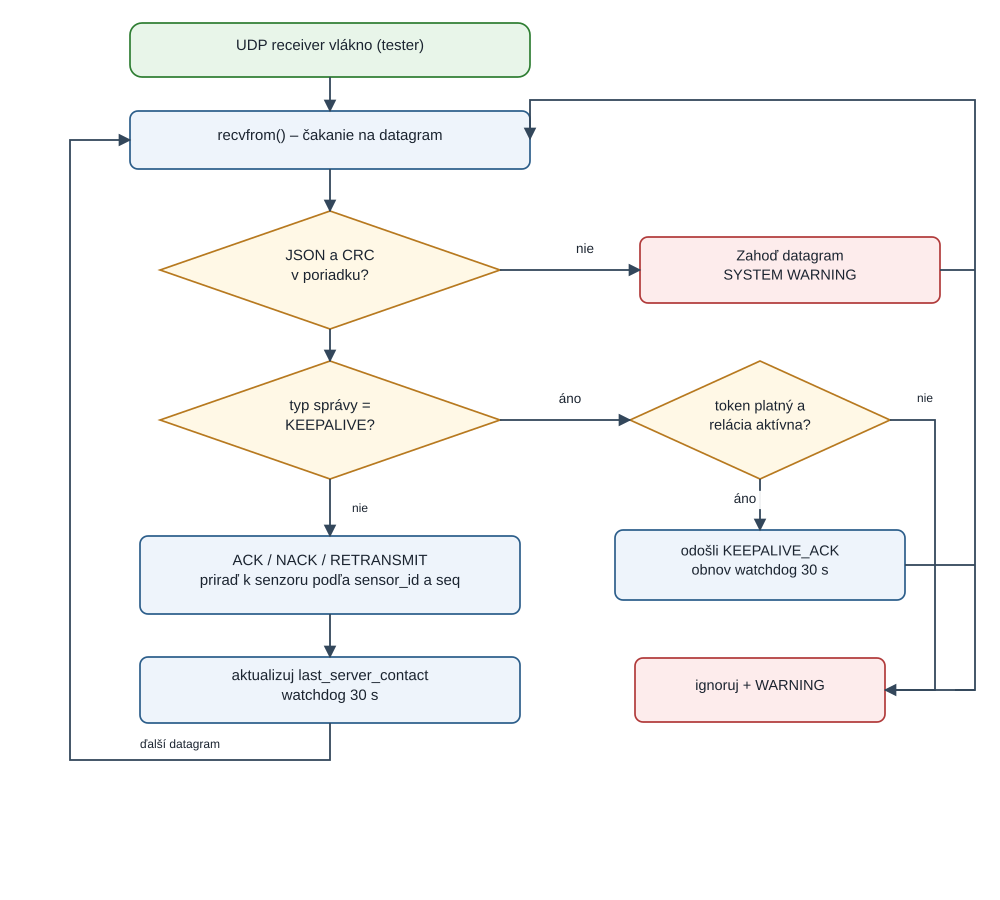
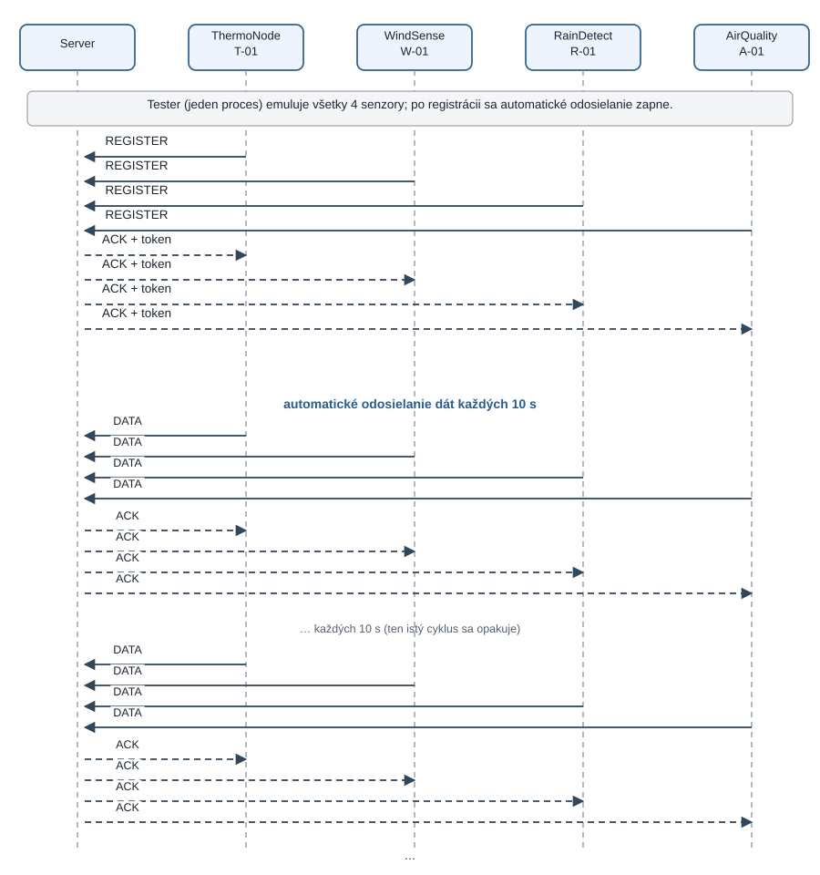
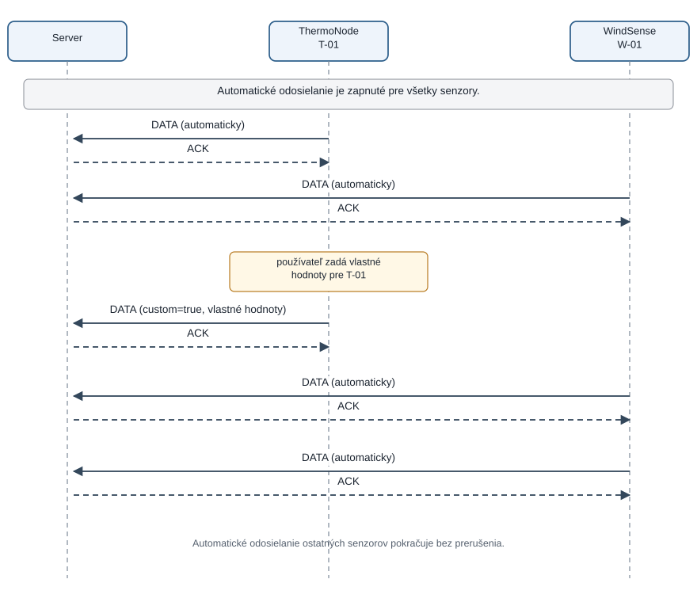
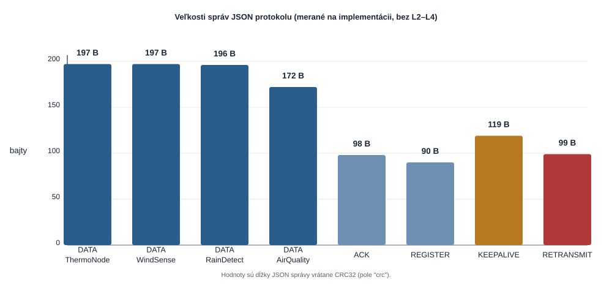
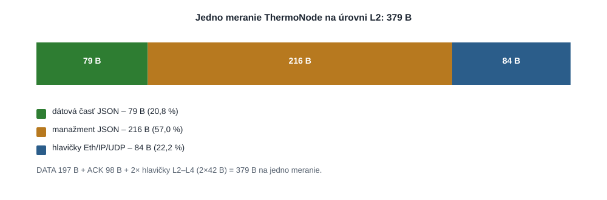

| Obrázok | Názov |
|---|---|
| 1 | Server – cyklus prijímania správy |
| 2 | Server – monitor neaktivity a odosielanie KEEPALIVE |
| 3 | Tester – cyklus odosielania dátovej správy |
| 4 | Tester – cyklus prijímania správ |
| 5 | UAT 1 – registrácia štyroch senzorov a automatické odosielanie |
| 6 | UAT 2 – dodatočná dátová správa s vlastnými hodnotami |
| 7 | Veľkosti JSON správ merané na implementácii |
| 8 | Zloženie prenosu jedného merania na úrovni L2 |
Riešenie tvoria dva samostatné programy v Pythone: server a tester (emulátor senzorov). Komunikujú vlastným aplikačným protokolom nad UDP. Protokol je v tejto fáze reprezentovaný JSON správami, ktoré sú čitateľné pri ladení a vo Wiresharku. Server prideľuje senzorom relácie a tokeny, overuje integritu dát, potvrdzuje merania, vyžaduje retransmisiu poškodených správ a kontroluje aktivitu senzorov pomocou KEEPALIVE správ.
Tester emuluje ľubovoľný počet senzorov všetkých štyroch typov. Po registrácii začne každý senzor automaticky odosielať dáta každých 10 sekúnd. Používateľ môže odosielanie pozastaviť, poslať vlastnú dátovú správu, vniesť chybu do nasledujúcej správy alebo ukončiť lokálnu reláciu a simulovať tak odpojenie zariadenia.
| P | Požiadavka | Ako je splnená |
|---|---|---|
| P1 | Vlastný aplikačný protokol nad UDP | 7 typov JSON správ, hlavička s seq, sensor_id, token, crc (§3) |
| P2 | Server + testovací program pre všetky typy senzorov | server.py, tester.py – 4 typy senzorov, ľubovoľný počet inštancií |
| P3 | Registrácia a token; neplatný token sa zamietne | REGISTER → ACK s tokenom; každá DATA/KEEPALIVE_ACK sa overuje, inak NACK |
| P4 | Automatické odosielanie každých 10 s, možnosť vypnúť/zapnúť | Worker vlákno senzora, po registrácii zapnuté; menu voľba 5 |
| P5 | Python a priamy socket, bez hotových protokolov | UDP socket, vlastná serializácia, CRC32, žiadna tretia strana (§7) |
| P6 | Overenie integrity; poškodené dáta si server vypýta | CRC32 nad kanonickým JSON; pri zhode bez chyby, inak RETRANSMIT (§3.1) |
| P7 | Vnesenie chyby pre vybraný senzor (poškodí ďalšiu správu) | Voľba 7: poškodí prvú číslicu v dátach nasledujúceho DATA datagramu, CRC prestane platiť |
| P8 | Dodatočná dátová správa s vlastnými hodnotami | Voľba 6: interaktívne zadanie všetkých parametrov s kontrolou rozsahov; správa má custom=true |
| P9 | SENSOR IDLE, KEEPALIVE každých 5 s, disconnect po 30 s | Monitor relácií na serveri; 15 s + 5 s + 5 s + 5 s; senzor má 30 s watchdog (§3.4) |
| P10 | Viac senzorov rovnakého typu, typ + jednoznačný identifikátor | Relácia je kľúčovaná sensor_id; rovnaké ID s iným typom je odmietnuté |
| P11 | Bez ACK do 3 s opakovať, celkovo max. 3 odoslania | Pokus 1 + 2 opakovania, po treťom čakaní sa správa zahodí (§3.4) |
| P12 | Jednotný formát logov v angličtine | TIMESTAMP | TYPE | LEVEL | SOURCE | EVENT/MESSAGE (§6) |
| P13 | IP a port konfigurovateľné z rozhrania, validácia, obsadený port | Menu oboch programov, kontrola IPv4 a rozsahu portu, ošetrený OSError pri binde |
| P14 | Robustnosť voči očakávaným chybám | Validácia JSON, CRC, tokenu a rozsahov; výnimky vo vláknach sa logujú, program nespadne |
| P15 | Logy vždy do súboru, voliteľne aj do konzoly | server.log / tester.log, prepínač konzoly v menu |
| UAT | Scenár | Mechanizmus v riešení |
|---|---|---|
| UAT 1 | Pripojenie a automatické generovanie správ | Voľba 4 zaregistruje 4 senzory; dáta každých 10 s, ACK; všetko v logu |
| UAT 2 | Dodatočná správa s vlastnými hodnotami | Voľba 6 pre vybraný senzor; ostatné senzory odosielajú ďalej |
| UAT 3 | Zavedenie chyby do dát | Voľba 7; server zaloguje chybu integrity a požiada RETRANSMIT, tester pošle správu znova |
| UAT 4 | Odpojenie a kontrola aktivity | Voľba 5 (pause) a 8 (koniec relácie); server loguje SENSOR IDLE / SENSOR DISCONNECTED |
| UAT 5 | Chýbajúce ACK a opakovanie | Server vie potlačiť ACK pre zvolený senzor (voľba 5); tester opakuje podľa P11 |
Oba programy sú dvojvrstvové: sieťová časť beží vo vláknach, používateľské rozhranie v hlavnom vlákne. Vďaka tomu zostáva menu dostupné aj počas komunikácie – napríklad server môže prijímať dáta a súčasne umožní potlačiť ACK pre zvolený senzor (UAT 5).
| Program | Vlákna |
|---|---|
| Server | hlavné vlákno (menu) · UDP listener · idle monitor (kontrola relácií každých 0,2 s) |
| Tester | hlavné vlákno (menu) · UDP receiver · jedno worker vlákno pre každý senzor |
Senzor je jednoznačne určený dvojicou sensor_type a sensor_id. Server vedie relácie v tabuľke podľa sensor_id; rovnaké ID s iným typom odmietne. Relácia obsahuje token, adresu klienta, čas poslednej aktivity, počet odoslaných KEEPALIVE správ a stav idle. Token je náhodných 64 bitov (secrets.token_hex(8)) a je súčasťou každej ďalšej správy danej relácie. Opätovná registrácia rovnakého senzora vytvorí nový token a starý prestane platiť.
| Parameter | Server | Tester |
|---|---|---|
| IP adresa | listen IP (predvolene 0.0.0.0) | adresa servera (predvolene 127.0.0.1) |
| Port | listen port (predvolene 9000) | port servera (predvolene 9000); lokálny bind port voliteľný |
| Validácia | IPv4 adresa cez ipaddress.IPv4Address, port 0–65535, obsadený port zachytený ako OSError s chybovou hláškou | |
$ python server.py # menu: 1) Configure and start listening $ python tester.py # menu: 1) Configure server address, 4) Register one sensor of each type
Programy sú spustiteľné na dvoch fyzických zariadeniach v tej istej sieti: server sa naviaže na IP rozhrania alebo na 0.0.0.0, tester dostane IP servera. Firewall musí povoliť zvolený UDP port.
Každá správa je jeden JSON objekt prenesený v jednom UDP datagrame. Povinné polia sú type, seq (sekvenčné číslo odosielateľa) a crc. Podľa typu pribúdajú sensor_type, sensor_id, token, ack_for, for_seq, values, reason.
CRC32 sa počíta nad kanonickou podobou správy bez poľa crc: kľúče zoradené abecedne, kompaktný JSON (bez medzier), UTF-8. Rovnaký algoritmus používajú obe strany, takže akákoľvek zmena obsahu (alebo poškodenie prenosu) spôsobí nesúlad. CRC32 je vhodné pre PoC: je rýchle, deterministické a odhalí bežné chyby prenosu. V binárnej verzii bude mať hlavička vlastné pole pre CRC; pôjde o rovnaký princíp s kratším zápisom.
canonical = json.dumps({k: v for k, v in msg.items() if k != "crc"},
sort_keys=True, separators=(",", ":"), ensure_ascii=False)
crc = zlib.crc32(canonical.encode("utf-8")) & 0xFFFFFFFF # 8 hex znakov
| Typ správy | Smer | Účel |
|---|---|---|
| REGISTER | senzor → server | registrácia typu a ID, žiadosť o reláciu |
| ACK | server → senzor | potvrdenie registrácie (s tokenom) alebo dátovej správy |
| NACK | server → senzor | odmietnutie správy (neplatný token, neznáma relácia, zlé hodnoty) |
| DATA | senzor → server | namerané hodnoty alebo vlastné hodnoty od používateľa |
| RETRANSMIT | server → senzor | žiadosť o znovuzaslanie správy po chybe integrity |
| KEEPALIVE | server → senzor | overenie dostupnosti neaktívneho senzora |
| KEEPALIVE_ACK | senzor → server | odpoveď na KEEPALIVE, obnovenie aktivity relácie |
REGISTER – senzor oznámi typ a ID. Server overí typ, formát ID a duplicitu; pri úspechu vytvorí reláciu a vráti ACK s tokenom.
{"type":"REGISTER","seq":1,"sensor_type":"ThermoNode","sensor_id":"T-01","crc":"72e6469a"}
ACK – potvrdenie registrácie obsahuje pridelený token; potvrdenie dát token neobsahuje.
{"type":"ACK","seq":10,"ack_for":1,"sensor_type":"ThermoNode","sensor_id":"T-01",
"token":"a574b506df2ec69f","crc":"4fe717a0"}
{"type":"ACK","seq":11,"ack_for":2,"sensor_type":"ThermoNode","sensor_id":"T-01","crc":"da583df4"}
NACK – správa nebola prijatá. Dôvod je v poli reason.
{"type":"NACK","seq":12,"ack_for":5,"sensor_id":"T-01","reason":"INVALID TOKEN","crc":"10351f80"}
DATA – meranie. Hodnoty sú v objekte values, názvy parametrov sú malými písmenami podľa zadania. Vlastná správa od používateľa má navyše "custom":true.
{"type":"DATA","seq":2,"sensor_type":"ThermoNode","sensor_id":"T-01",
"token":"a574b506df2ec69f",
"values":{"temperature":21.3,"humidity":55.4,"dew_point":11.9,"pressure":1013.25},
"crc":"c3650c97"}
RETRANSMIT – server požiada o znovuzaslanie správy s daným seq (po neúspešnej kontrole CRC).
{"type":"RETRANSMIT","seq":22,"sensor_id":"T-01","for_seq":7,
"reason":"INTEGRITY","crc":"27c0c803"}
KEEPALIVE – server overuje senzor, od ktorého 15 s neprišli dáta.
{"type":"KEEPALIVE","seq":13,"sensor_type":"ThermoNode","sensor_id":"T-01",
"token":"a574b506df2ec69f","crc":"7b4a3e84"}
KEEPALIVE_ACK – senzor potvrdí dostupnosť; server tým obnoví aktivitu relácie.
{"type":"KEEPALIVE_ACK","seq":3,"for_seq":13,"sensor_type":"ThermoNode",
"sensor_id":"T-01","token":"a574b506df2ec69f","crc":"79b01378"}
| Pole | Význam |
|---|---|
| seq | sekvenčné číslo odosielateľa; pri opakovaní tej istej správy sa nemení |
| ack_for | seq potvrdzovanej správy |
| for_seq | seq správy, ktorú treba znovu poslať (RETRANSMIT) |
| token | pridelený 64-bitový identifikátor relácie; overuje sa pri každej správe |
| values | objekt s nameranými hodnotami; presne zodpovedá typu senzora |
| crc | CRC32 kanonickej podoby správy bez tohto poľa, 8 hex znakov |
| Udalosť | Hodnota | Strana |
|---|---|---|
| periodické odosielanie dát | každých 10 s (prvá správa ihneď po registrácii) | tester |
| čakanie na ACK | 3 s | tester |
| maximálny počet odoslaní správy | 3 (pôvodné + 2 opakovania), potom zahodenie | tester |
| SENSOR IDLE | po 15 s bez dát od senzora s platnou reláciou | server |
| KEEPALIVE | prvý hneď po SENSOR IDLE, ďalšie každých 5 s (max. 3 bez odpovede) | server |
| SENSOR DISCONNECTED | po 15 + 5 + 5 + 5 = 30 s, token sa zneplatní | server |
| watchdog relácie | 30 s od poslednej prijatej správy servera | tester |
Po odpovedi na KEEPALIVE server ukončí prebiehajúce kolo. Ak senzor naďalej neposiela dáta, o ďalších 15 s začne nové kolo. Po tretej nezodpovedanej KEEPALIVE správe čaká ešte 5 s a až potom reláciu zruší – presne podľa zadania. Senzor má vlastný 30 s watchdog; na rozdiel od doslovného znenia zadania ho obnovuje každá platná správa od servera (nielen KEEPALIVE), pretože počas aktívneho odosielania dát server KEEPALIVE neposiela a relácia by inak zanikla.
| Situácia | Reakcia servera | Log |
|---|---|---|
| neplatný JSON / neúplný datagram | zahodenie | SYSTEM | WARNING |
| nesúlad CRC | RETRANSMIT, meranie sa neprijme | Integrity check failed …, retransmission requested |
| neznáma relácia | NACK (UNKNOWN SESSION) | SYSTEM | WARNING |
| neplatný token | NACK (INVALID TOKEN), relácia sa nemení | SYSTEM | WARNING |
| hodnota mimo rozsahu / zlý počet parametrov | NACK (INVALID VALUES) | Invalid data from … |
| duplicitné ID s iným typom | NACK (DUPLICATE SENSOR ID) | SYSTEM | WARNING |
| 15 s bez dát | SENSOR IDLE + KEEPALIVE | SYSTEM | INFO |
| 3× bez odpovede na KEEPALIVE | zrušenie relácie, zneplatnenie tokenu | SENSOR DISCONNECTED |
| obsadený port pri binde | chybová hláška v menu, program pokračuje | SYSTEM | ERROR |

Listener čaká v recvfrom(). Po prijatí datagramu sa pokúsi o JSON parsovanie; nečitateľný vstup sa zaloguje a zahodí. Nasleduje kontrola CRC – pri nesúlade server zaloguje chybu integrity, odošle RETRANSMIT s číslom poškodenej správy a pokračuje čakaním na opakovanú správu. Pri platnom CRC sa správa spracuje podľa typu: registrácia vytvorí reláciu a vráti token, dátová správa overí token a rozsahy hodnôt a je potvrdená ACK (ak nie je ACK práve potlačené pre UAT 5), KEEPALIVE_ACK obnoví aktivitu relácie. Každá vetva sa vracia na ďalší recvfrom().

Samostatné vlákno prechádza každých 0,2 s všetky relácie. Ak od poslednej aktivity uplynulo aspoň 15 s, zaloguje SENSOR IDLE a naplánuje prvú KEEPALIVE správu. Po každej odoslanej KEEPALIVE sa ďalšia naplánuje o 5 s. Po troch správach bez odpovede (a ďalších 5 s čakania) reláciu zruší a token zneplatní. Odpoveď KEEPALIVE_ACK kolo ukončí; ďalšie kolo sa začne až po ďalších 15 s ticha, takže senzor s vypnutým odosielaním zostáva pripojený.

Worker vlákno senzora čaká na interval 10 s (po zapnutí odosielania odošle hneď). Zostaví DATA správu so sekvenčným číslom, tokenom a hodnotami. Ak je nastavené vnesenie chyby, poškodí sa iba prvý prenos daného datagramu, takže CRC na serveri neprejde. Po odoslaní sa čaká 3 s na ACK; pri RETRANSMIT alebo timeoute sa posiela tá istá správa s rovnakým seq, najviac trikrát. Po treťom neúspešnom čakaní sa správa zahodí. NACK cyklus ukončí bez opakovania.

Receiver vlákno overí JSON a CRC. KEEPALIVE spracuje priamo: ak relácia existuje a token sedí, odošle KEEPALIVE_ACK a obnoví 30 s watchdog. ACK, NACK a RETRANSMIT sa podľa sensor_id zaradia do fronty príslušného senzora, kde ich čakajúci odosielací cyklus spáruje podľa ack_for / for_seq. Každá platná správa od servera zároveň obnoví watchdog.

Tester zaregistruje štyri senzory (jeden z každého typu). Server každému pridelí token a od tej chvíle prijíma dáta každých 10 s. Diagram zobrazuje dve dátové obdobia; v skutočnom teste stačí, aby server prijal aspoň dve správy od každého senzora, čo je splnené po 20 s. Všetky správy sú viditeľné vo Wiresharku (UDP port servera).

Po zadaní hodnôt pre vybraný senzor tester odošle DATA s príznakom custom=true. Server overí token, rozsahy aj počet parametrov, zaloguje presne zadané hodnoty a potvrdí správu. Automatické odosielanie ostatných senzorov nie je nijako pozastavené – každý senzor má vlastné vlákno a vlastnú frontu správ.
Logy sú v angličtine a majú pevný formát podľa zadania. Čas je v UTC s milisekundami. Zapisujú sa vždy do súboru v adresári programu; prepínačom v menu možno zapnúť aj výpis do konzoly. Zápis je chránený zámkom, takže riadky z rôznych vlákien sa nemiešajú.
<TIMESTAMP> | <TYPE> | <LEVEL> | <SOURCE> | <EVENT/MESSAGE>
2026-10-20T09:00:10.801Z | SYSTEM | INFO | SERVER | Server listening on 0.0.0.0:9000
2026-10-20T09:00:10.805Z | SYSTEM | INFO | SERVER | Registered ThermoNode:T-01 from 192.168.1.5:51234
2026-10-20T09:00:11.004Z | MESSAGE | INFO | SERVER | Received from TESTER:ThermoNode:T-01 {"type":"DATA",...,"values":{"temperature":21.3,...},"crc":"c3650c97"}
2026-10-20T09:00:13.189Z | SYSTEM | WARNING | SERVER | Integrity check failed for ThermoNode:T-01, retransmission requested
2026-10-20T09:00:15.952Z | SYSTEM | INFO | SERVER | SENSOR IDLE: WindSense:W-01
2026-10-20T09:00:20.374Z | SYSTEM | WARNING | SERVER | SENSOR DISCONNECTED: WindSense:W-01 (token invalidated)
| TYPE | Použitie |
|---|---|
| SYSTEM | lokálna udalosť programu – štart, chyba, zmena stavu senzora, SENSOR IDLE / DISCONNECTED |
| MESSAGE | odoslaná alebo prijatá správa protokolu, celý obsah v čitateľnej podobe |
Úrovne zodpovedajú odporúčaniu Syslogu (RFC 5424): INFO pre bežnú prevádzku, WARNING pre chybu integrity, potlačené ACK a odpojenie, ERROR pre neodoslané alebo odmietnuté správy a zlyhania socketu. Súbory: server.log a tester.log.
Oba programy používajú výlučne štandardnú knižnicu Pythonu (verzia 3.10+). Žiadna knižnica tretích strán neimplementuje komunikáciu ani protokol – socket, serializáciu, CRC aj logovanie rieši vlastný kód, ako to vyžaduje P5.
| Knižnica | Použitie |
|---|---|
| socket | UDP socket, bind, sendto, recvfrom |
| threading | listener, idle monitor, receiver a worker vlákna, zámky, ukončovanie |
| json | serializácia a parsovanie JSON správ |
| zlib | CRC32 pre integritu správ |
| hmac | porovnanie CRC a tokenov v konštantnom čase |
| secrets | generovanie náhodných session tokenov |
| queue | fronta odpovedí pre každý emulovaný senzor |
| ipaddress | validácia IPv4 adries v rozhraní |
| datetime, time | UTC čas s milisekundami, časovače (monotonic) |
| dataclasses, typing | štruktúra relácie a typové anotácie |
| random, re, os, sys | generovanie hodnôt, validácia ID, cesty a konzola |
Cieľom je zmerať, koľko bajtov prenosu spotrebuje jedno meranie a aký podiel z toho tvorí užitočná informácia. Aby bolo porovnanie JSON a binárnej verzie korektné, musia obe varianty bežať v rovnakom scenári: rovnaké typy a počet senzorov, rovnaký počet meraní, rovnaké časovanie, rovnaké správanie ACK a retransmisií. Postup:
Meranie musí zahŕňať aj nižšie vrstvy, inak sú čísla neporovnateľné. Na jedno UDP datagram pripočítame 42 bajtov hlavičiek (Ethernet II 14 B + IPv4 20 B + UDP 8 B); FCS (4 B) sa pri zachytávaní bežne nezobrazuje, preto ho uvádzame osobitne. Pri malých rámoch treba zohľadniť aj doplnenie na minimálnu dĺžku Ethernet rámca 64 B (vrátane FCS).
| Vrstva | Bajty | Poznámka |
|---|---|---|
| Ethernet II | 14 | MAC adresy + EtherType (IPv4 = 0x0800) |
| IPv4 | 20 | bez opcií |
| UDP | 8 | porty, dĺžka, kontrolný súčet |
| Ethernet FCS | 4 | voliteľne; vo Wiresharku zvyčajne nie je |
| Spolu na datagram | 42 (46) | bez (s) FCS |
Veľkosti nižšie sú zmerané priamo na implementácii: správa sa zserializuje rovnakým kódom ako pri prenose a zaráta sa CRC. Ide o dĺžku aplikačnej správy, teda bez hlavičiek L2–L4.
| Správa | Bajty (JSON) | Poznámka |
|---|---|---|
| DATA – ThermoNode | 197 | 4 parametre, hodnoty ako v príklade |
| DATA – WindSense | 197 | 4 parametre |
| DATA – RainDetect | 196 | 4 parametre |
| DATA – AirQuality | 172 | 3 parametre |
| ACK | 98 | potvrdenie dát |
| ACK s tokenom (registrácia) | 125 | pridelenie relácie |
| REGISTER | 90 | jednorazovo na senzor |
| KEEPALIVE | 119 | len pri neaktívnom senzore |
| RETRANSMIT | 99 | len po chybe integrity |
| NACK | 97 | len pri odmietnutí |

Pre jedno meranie ThermoNode teda platí: DATA 197 B + ACK 98 B + dve sady hlavičiek L2–L4 (2 × 42 B) = 379 B. Pri intervalu 10 s je to 8 640 meraní za deň, teda približne 3,27 MB na senzor a deň. Štyri senzory spotrebujú približne 13,1 MB denne. Registrácia je jednorazová (rádovo stovky bajtov), KEEPALIVE sa uplatní len pri výpadku dát.

Z grafu je zrejmé, prečo má binárna optimalizácia zmysel: samotné hodnoty tvoria len približne 21 % prenosu. Väčšinu spotrebúvajú názvy polí, token, CRC v hexadecimálnom zápise a hlavičky.
Po implementácii binárnej verzie sa rovnaký scenár zmeria znova a výsledky sa doplnia do tabuľky. Porovnávať sa budú minimálne tieto ukazovatele:
| Ukazovateľ | JSON (PoC) | Binárna verzia | Rozdiel |
|---|---|---|---|
| Bajty na jedno meranie (L2) | 379 | — | — |
| Z toho užitočné dáta | 79 B (20,8 %) | — | — |
| Z toho manažment protokolu | 216 B (57,0 %) | — | — |
| Z toho hlavičky L2–L4 | 84 B (22,2 %) | — | — |
| Objem za 30 min, 4 senzory | cca 273 kB | — | — |
| Odhad spotreby za deň | cca 13,1 MB | — | — |
Grafické výstupy budú dva: stĺpcový graf bajtov na meranie pre oba varianty a čiarový graf kumulatívneho objemu v čase (rovnaký scenár). Tabuľka aj grafy budú súčasťou finálnej dokumentácie; v tomto bode sú pripravené nástroje a metodika, aby bolo meranie opakovateľné.
Binárna hlavička môže mať 2 bity pre typ správy, 2 bity pre typ senzora, 8 bitov pre ID, 64 bitov pre token, 32 bitov pre časovú značku a 16 bitov pre CRC. Hodnoty je možné kódovať s presne potrebným rozsahom (napr. teplota −50,0…60,0 po 0,1 °C = 1 101 hodnôt ≈ 11 bitov, tlak 800,00…1 100,00 po 0,01 hPa ≈ 18 bitov). Aj s rezervou sa celé meranie ThermoNode zmestí do približne 20–24 bajtov namiesto 197 bajtov JSON; ACK môže mať jednotky bajtov. Cieľom druhej fázy je zmerať reálny rozdiel, nielen ho odhadovať.
Programy: server.py, tester.py. Dokumentácia je vygenerovaná z HTML zdroja v priečinku dokumentacia_src; diagramy sú vektorové SVG, takže zostávajú čitateľné pri ľubovoľnom priblížení.